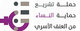
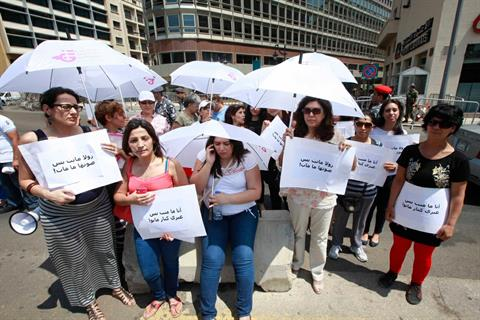
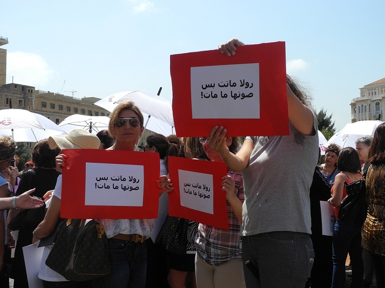
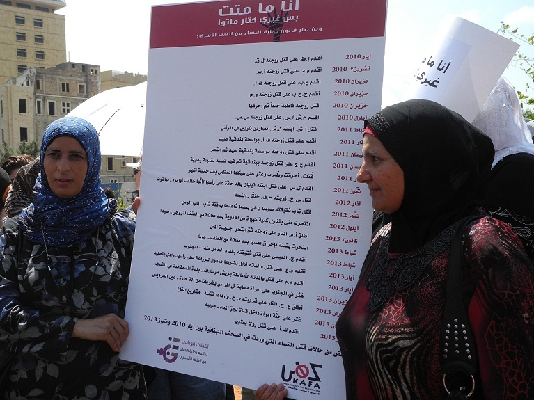
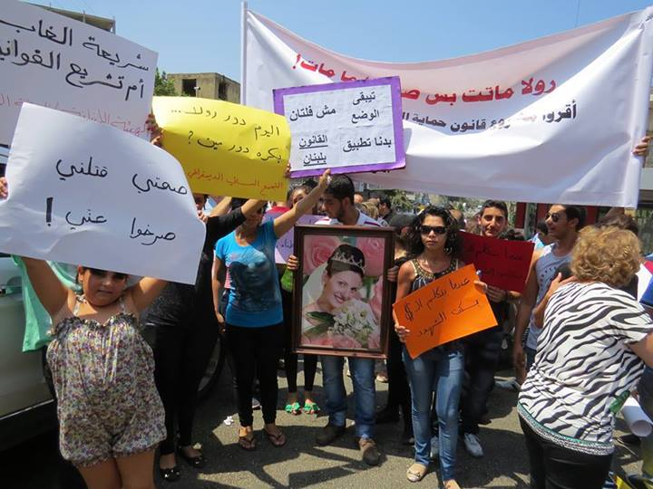
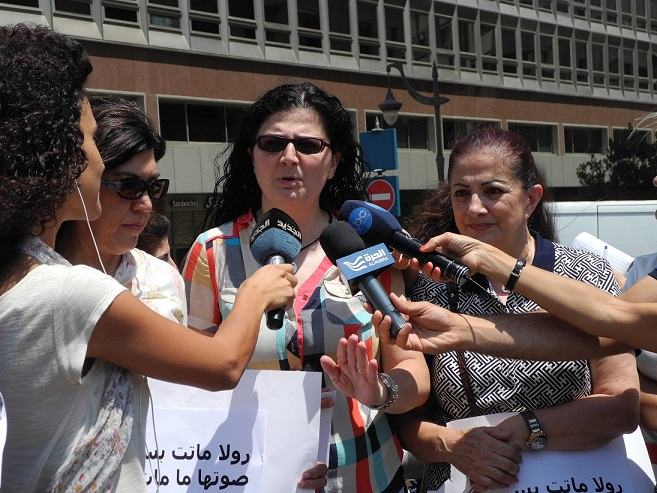
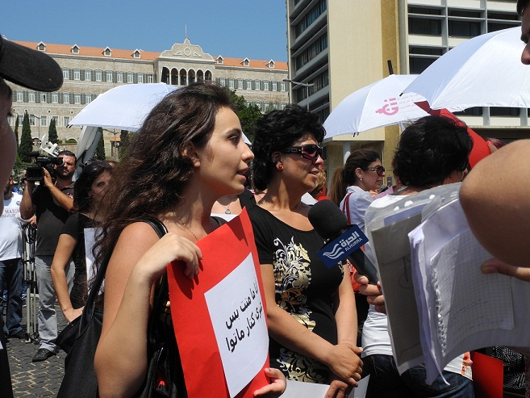
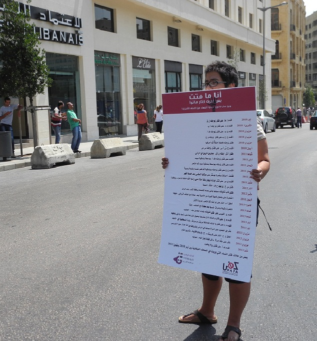
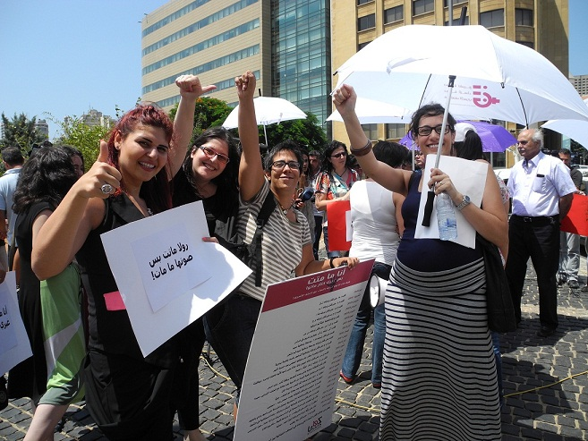

پذيرش > تریبون > مقالات > تصویب قانون حمایت از زنان و خانواده در برابر خشونت خانگی در مجلس لبنان / آزاده (...)


 تصویب قانون حمایت از زنان و خانواده در برابر خشونت خانگی در مجلس لبنان / آزاده فرامرزیها تصویب قانون حمایت از زنان و خانواده در برابر خشونت خانگی در مجلس لبنان / آزاده فرامرزیها
1 مرداد 1392 - - نسخه قابل چاپ
فعالان حقوق زنان در لبنان: این تنها شروع راه ماست

تغییر برای برابری: مجلس لبنان روز دوشنبه پیش نویس قانون حمایت از زنان و خانواده در برابر خشونت خانگی را به تصویب رساند. این قانون از سال 2008 در دستور بررسی مجلس و دولت لبنان قرار داشته و فعالان حقوق زنان تلاشهای بسیاری برای به تصویب رساندن آن انجام داده اند. تصویب این قانون گام مهمی در راستای ارتقای وضعیت زنان در لبنان به شمار می آید.

دهها نفر از فعالان حقوق زنان روز دوشنبه در بیروت در حوالی مجلس گردهم آمدند تا از نزدیک رای گیری درباره این پیشنویس را پیگیری کنند.
به گفته آنان اگرچه این قانون هنوز کم و کاست های بسیار دارد و تصویب آن تنها شروع راه است، اما راه را برای تلاشهای گسترده تر باز می کند.

بیست و چهار زن در طول سالهای 2010 تا 2013 در لبنان بر اثر خشونتهای خانگی به قتل رسیده اند. بسیاری دیگر روزانه در معرض خشونت خانگی قرار می گیرند اما ترس و عدم حمایت قانونی مانع از اعتراض آنان می شود. آخرین نمونه خشونت منجر به مرگ حدود دو هفته پیش در حلبا، شهری در شمال لبنان اتفاق افتاد که خشم فعالان حقوق بشر و حقوق زنان و رسانه های این کشور را برانگیخت.

رولا یعقوب، 31 ساله و مادر پنج فرزند بر اثر ضرب و شتم همسرش به قتل رسید. کشته شدن این زن بحث خشونت خانگی را بار دیگر در سطح جامعه مطرح کرد. فعالان حقوق زنان روز یکشنبه تجمعی بزرگ در شهر حلبا برگزار کردند و خواستار پیگیری عادلانه پرونده رولا و تصویب قانون حمایت از زنان در برابر خشونت خانگی شدند.

سازمان کفا، از جمله سازمانهای غیر دولتی موثر در ارائه این پیشنویس در بیانیه ای اعلام کرده است: "زنان قربانی یک جامعه مرد-محورند که در آن رهبران سیاسی و مذهبی و اعضای پارلمان، آنان را به عنوان شهروند درجه دو می شناسند". این موضوع حتی در عنوان این پیشنویس مصوب قابل لمس است. به گفته فاتن ابو شاکرا، یکی از کنشگران سازمان کفا "این قانون تحت عنوان حمایت از زنان و همه اعضای خانواده در برابر خشونت خانگی به تصویب رسیده و از تخصیص عنوانی خاص زنان خودداری کرده است". وی تاکید کرد که فعالان حقوق زنان تلاش خواهند کرد تا قانونی با نام زنان و ویژه زنان را به مجلس ارائه دهند.

مایا العمار دیگر کنشگر این سازمان از مهم ترین مفاد این قانون نام برد: "مهمترین دستاورد ما در این پیشنویس گنجاندن مکانیسم های حمایت از زنان مورد خشونت توسط بخش ویژه ای از نیروهای امنیت داخلی است که برای مقابله با خشونت خانگی آموزش دیده اند". این بخش ویژه اجازه دارد موارد خشونت را ثبت و به دادگاه گزارش کند و همچنین زنان مورد خشونت را به خانه های امن منتقل کند.

دو مورد تجاوز در رابطه زناشویی و کم کردن نقش محکمه های مذهبی در مفاد این پیشنویس از نکات چالش برانگیز آن در طول این سالها بوده و بارها مورد اعتراض نمایندگان و گروههای مذهبی قرار گرفته است. گروههای سنی در لبنان بحث تجاوز در رابطه زناشویی را نوعی ارتداد غربی خوانده و گروههای شیعی آن را دخالت در رابطه خصوصی زن و مرد نامیده اند. متن این پیشنویس تجاوز در رابطه زناشویی را به رسمیت شناخته اما از آن به عنوان "توهین" یاد کرده است نه "جرم". تنها موارد ضرب و شتم، خیانت و آزار و اذیت به عنوان جرم مطرح شده اند. به گفته ابو شاکرا فعالان حقوق زنان "تلاش خواهند کرد تا مجلس را به بررسی مجدد این موضوع را به بحث بگذارد".
صلاحیت محکمه های مذهبی اما به طور کل در این قانون حذف شده و موارد مربوط به خشونت خانگی تنها در دادگاه های رسمی مورد بررسی قرار خواهند گرفت.

فعالان حقوق زنان در لبنان امیدوارند تصویب این پیشنویس مسیر رفع خشونت علیه زنان را هموارتر کند. مایا العمار می گوید: "ما می دانیم که این قانون قرار نیست معجزه باشد، تنها فرصتی است که ما باید از آن برای همکاری بیشتر و گسترده تر با مردم، سازمانهای غیر دولتی محلی و رسانه ها استفاده کنیم تا کسی با خشونت به عنوان یک مسئله شخصی یا خصوصی برخورد نکند".
ارسال به
بالاترین
،
توییتر
،
فریندفید
،
فیسبوک
در همين بخش :
 دهمین دورۀ مراسم تندیس صدیقه دولت آبادی ۱۳۹۲ دهمین دورۀ مراسم تندیس صدیقه دولت آبادی ۱۳۹۲
کارت پستالهایی به بهانهی هشت مارس و به یاد همهی مبارزین راه برابری
بیانیه بیش از 350 تن از مدافعان حقوق زنان به مناسبت روز جهانی زن؛ زنان هر روز فرودستتر میشوند
لباسی که برای تن ما دوخته اند! /اعظم بهرامی
چالشها و چشمانداز فعالیت مدنی زنان
ديگر بخش ها :
طرح یک میلیون امضا
|
مقالات
|
سایت نوشته ها
|
اخبار
|
گزارش كمپين
|
گفت و گو
|
علیه سکوت
|
كوچه به كوچه
|
نامه های شما
|
گزارش ویژه
|
گفتگو با اعضا
|
ویژه سالگرد کمپین
|
تصویر برابری
|
دل آرام علی
|
تریبون
|
مقالات
|
تاریخ شفاهی
|
خارج از چارچوب
|
کتابخانه
|
درباره کمپین
|
کمپین در شهرها
|
کمپین در بند
|
صدای تغییر
|
ویژه 22 خرداد
|
لایحه حمایت از خانواده
|
گالری
|
عشا مومنی
|
امیر یعقوبعلی
|
خدیجه مقدم
|
راحله عسگری زاده و نسیم خسروی
|
پروین اردلان،جلوه جواهری، مریم حسین خواه، ناهید کشاورز
|
زینب پیغمبرزاده
|
سعیده امین، سارا ایمانیان، محبوبه حسین زاده، ناهید کشاورز و همایون نامی
|
احترام شادفر
|
نسیم سرابندی زاده،فاطمه دهدشتی
|
وبلاگ مهمان
|
پرونده خرم آباد
|
دستگیری ها
|
مریم مالک
|
پرستو اللهیاری
|
مهرنوش اعتمادی
|
سمیه رشیدی
|
Other Languages
|
همراهان
|
«فراخوان کمپین ده روز با بهاره هدایت»
| English
|